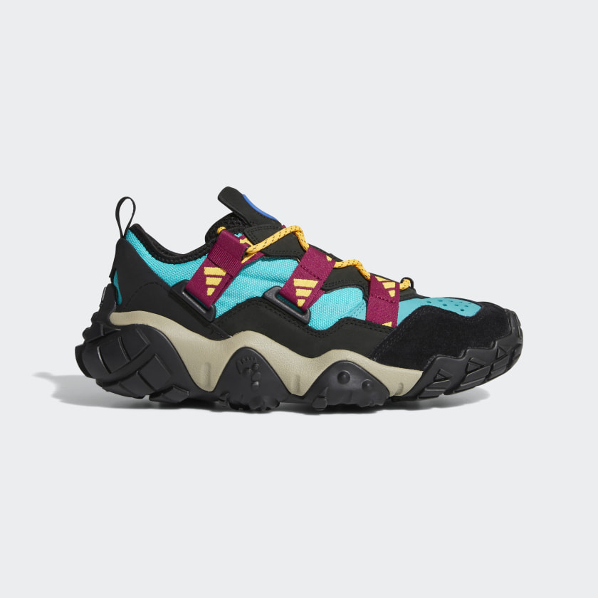
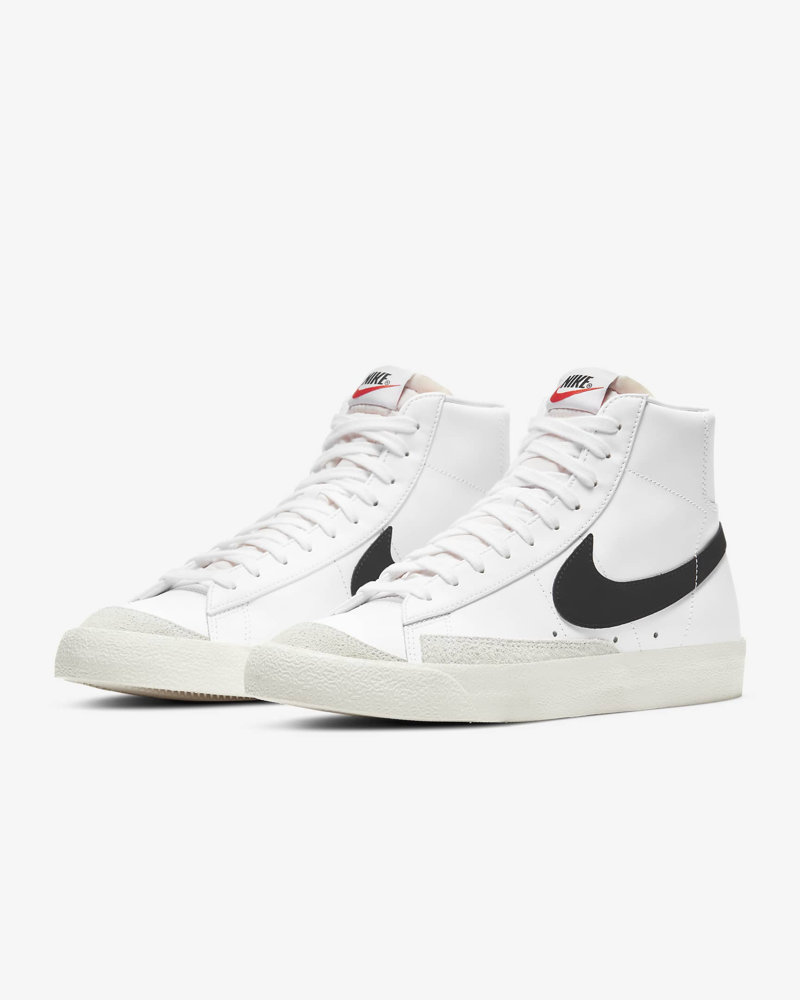
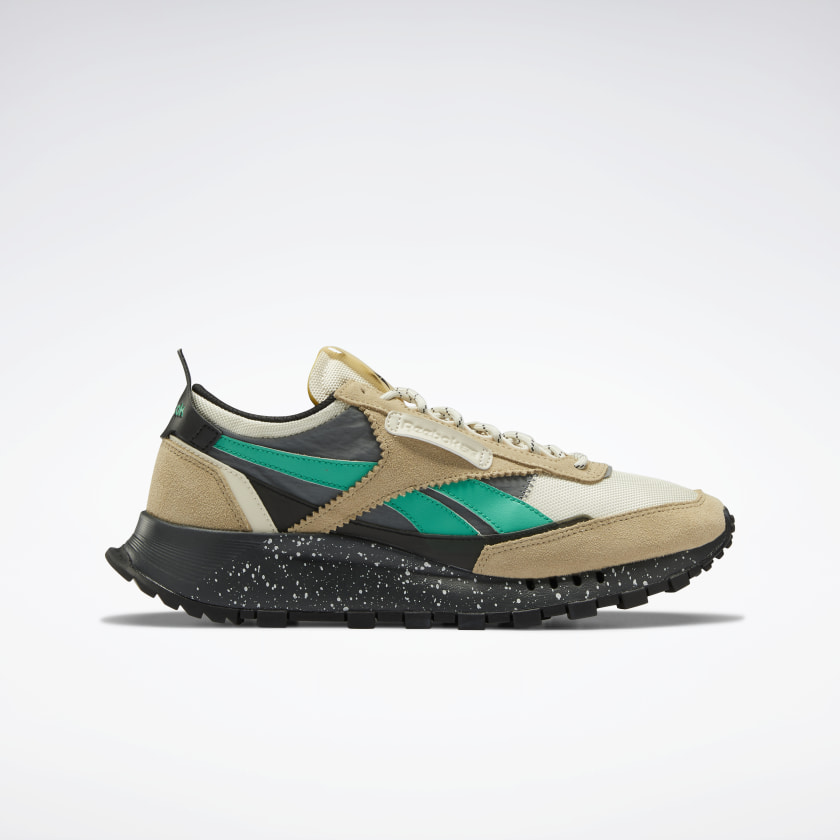
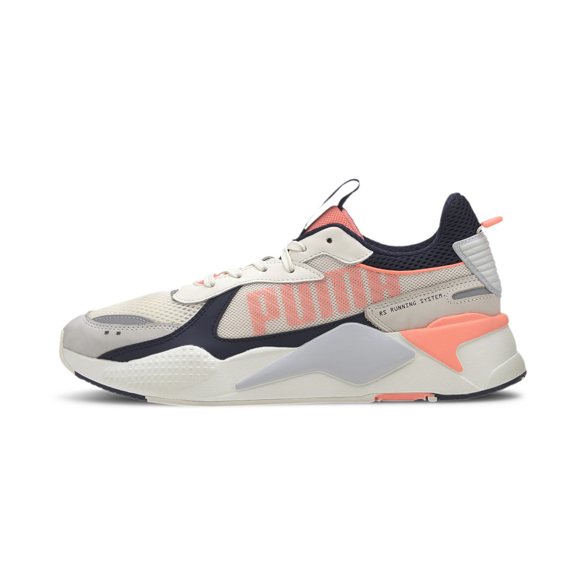
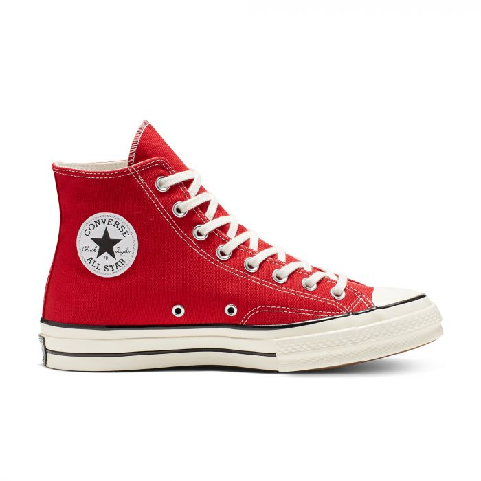
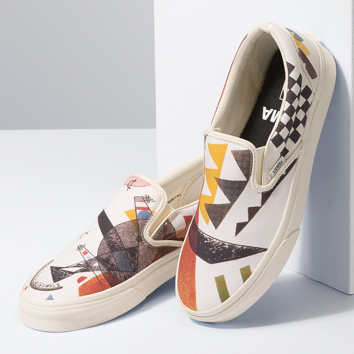

CROSSBIT
Krossovki_FYW

Краткое описание товара
Иногда сложно предугадать, как сложится день. Будь готов ко всему. Скажи "да" новым впечатлениям и перспективам в этих кроссовках adidas. Подметка с надежным сцеплением и шнуровка как на туристических ботинках выглядят так, словно ты прямо сейчас направляешься в горы. Только без тяжелого рюкзака и спрея от насекомых.
Характеристики товара
- Стандартная колодка
- Шнуровка
- Верх из сетки, нубука и замши
- Городские кроссовки, вдохновленные туристической обувью
- Резиновая подметка
- Страна производитель: Вьетнам
- Цвет модели: Hi-Res Aqua / Power Berry / Solar Gold
- Номер модели: FW9190
Adidas
Nike Blazer Mid '77 Vintage

Краткое описание товара
Кроссовки Nike Blazer Mid '77 Vintage с винтажной подошвой возрождают стиль баскетбольных моделей Nike из прошлого, создавая впечатление, что они хранились в шкафу долгие годы.
Характеристики товара
- Стандартная колодка
- Верх из кожи и синтетического материала для поддержки и комфорта.
- Винтажный дизайн подошвы для создания ретрообраза.
- Цельная подошва, созданная методом термической обработки, для минималистичного вида.
- Открытый пеноматериал на язычке создает образ в стиле ретро.
- Зигзагообразный рисунок подметки из твердой резины не оставляет следов и обеспечивает отличное сцепление и прочность.
- Цвет модели: Белый/Черный
- Модель: BQ6806-100
Nike
КРОССОВКИ CLASSIC LEATHER LEGACY

Краткое описание товара
Олдскульный стиль для современных улиц. Кроссовки вдохновлены обувью для бега из 80-х. Геометрическая промежуточная подошва с принтом в виде брызг краски подчеркивает их характер. Зазубренные края на боковых полосках вдохновлены архивными дизайнами Reebok. Подметка с плетением под сетку позволит оставить фирменный след.
Характеристики товара
- Стандартная колодка
- Материал верха: замша и текстиль
- Формованная промежуточная подошва обеспечивает дополнительную амортизацию без утяжеления
- Текстильная подкладка
- Резиновая подметка
- Страна-производитель: Вьетнам
- Цвет модели: Utility Beige / Alabaster / Black
- Номер модели: FY7465
Reebok
КРОССОВКИ RS-X BOLD

Краткое описание товара
RS-X – это RE-IMAGINATION: архивные технологии переосмыслены в фокусе модернизации стиля. Отличительная черта кроссовок RS-X Bold – яркая, резонирующая цветовая палитра. Грубоватые текстуры и контрастные материалы верхней части поддерживают заданную тему. Вставки на промежуточной подошве добавляют инновационное звучание. Подходят для мужчин и женщин.
Характеристики товара
- Стандартная колодка
- Материал верха: 70% текстиль, 20% натуральная кожа, 10% искусственная кожа
- Материал подошвы: ЭВА, резина (для сцепления)
- Пол: Унисекс
- На шнуровке
- Контрастные вставки
- Фирменные полоски PUMA Formstrip
- Логотип PUMA RS-X на язычке
- Страна-производитель: Вьетнам
Puma
Chuck 70 Vintage Canvas High-Top

Краткое описание товара
Улучшенная амортизация, более прочный канвас, неизменная универсальность. Кеды Chuck 70 созданы на основе оригинальной модели 70-х из первоклассных материалов с особым вниманием к деталям. Мы добавили дополнительную стельку для поддержки свода стопы и стабилизации, а также строчку на широком язычке из канваса плотностью 340 г для прочности. Нет причин, чтобы не носить их весь день, каждый день.
Характеристики товара
- Стандартная колодка
- Легкий и прочный верх из канваса.
- Популярный классический силуэт.
- Резиновая подошва для надежного сцепления
- Винтажный номерной знак
Converse
КЕДЫ CLASSIC SLIP-ON VANS X MOMA VASILY KANDINSKY

Краткое описание товара
Mix & Match Classic Slip-On – слипоны с верхом из канваса и замши. Мягкая окантовка, эластичные акценты по бокам и подошва с традиционным вафельным протектором.
Характеристики товара
- Стандартная колодка
- 77% кожа (бычья)
- 25,23% текстиль
- Подошва: 100% резина
Vans